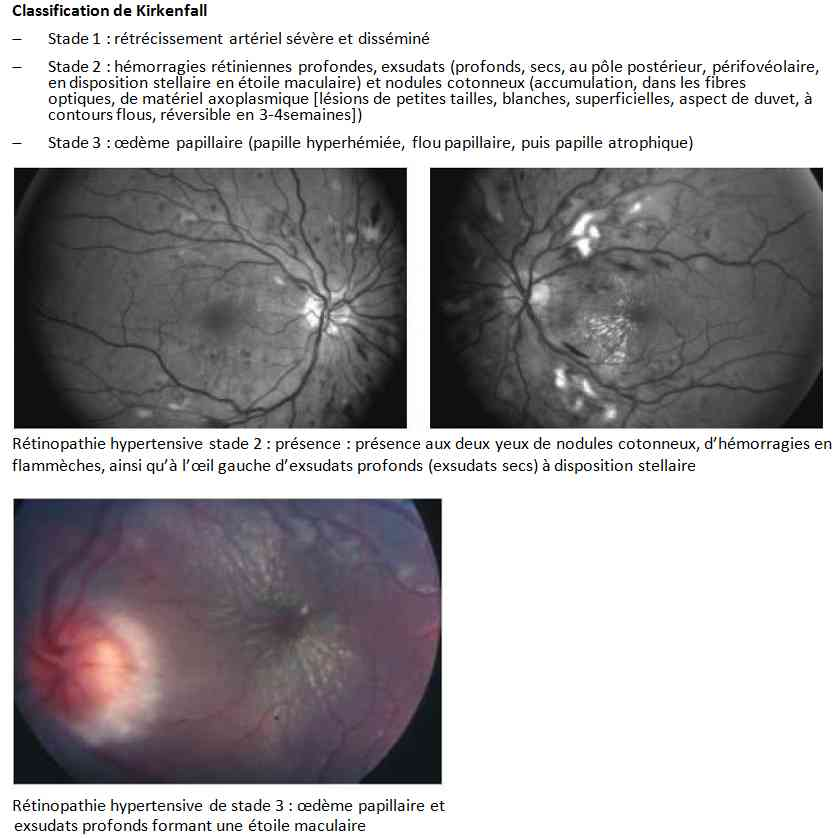
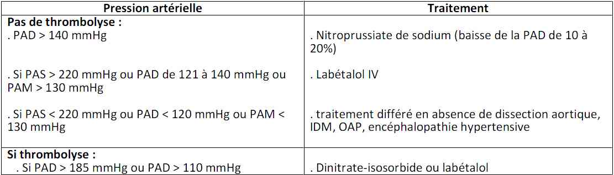

Bienvenue Sur Medical Education
Crise hypertensive
Spécialité : vasculaire /
Points importants
-
Définitions :
- HTA sévère : élévation de la PA sans retentissement organique
- Urgence hypertensive : élévation brutale de la PA avec retentissement organique (cerveau, reins, aorte, coeur = CRAC)
- HTA maligne : élévation de la PA avec encéphalopathie ou néphropathie et stade IV au fond d'oeil
- 1% des patients se présentant aux urgences
- Les crises hypertensives peuvent se voir soit sur HTA essentielle, soit sur une HTA secondaire
- La mortalité de l'HTA maligne non traitée est de 90% à un an
- CONFIRMER L'HTA : Méthode de mesure rigoureuse, HTA persistante au-delà d'une heure et après correction des éventuels facteurs déclenchants
- Fond d'oeil indispensable si HTA grade 3
- Le traitement est beaucoup plus fonction de la répercussion clinique que du chiffre tensionnel lui-même
- Nécessité d'un traitement précoce avec un médicament de délai et durée d'action courts, pour limiter les répercussions rénales, cardiaques et cérébrales
-
A NE PAS FAIRE :
- Instaurer un traitement anti-hypertenseur d'action rapide ou injectable de façon injustifiée car il expose au risque d'apparition d'une HoTA brutale et incontrôlable compliquée d'un déficit ischémique cérébral
- traiter par Loxen peros des HTA sévères sans retentissement clinique
-
Ramener la PA à la normale rapidement : le but du traitement est de ramener la PAM dans les limites d'autorégulation cérébrale.
Présentation clinique / CIMU
CONTEXTE
Terrain
- Hommes noirs
- Précarité
Antécédents
- Cardio-vasculaires (poussées antérieures d'HTA)
- Neurologiques
- Néphrologiques
- Facteurs de risque cardio-vasculaires
- Phéochromocytome
Traitement anti-hypertenseur
Circonstances de survenue
- Mode d'installation : brutal et durable (signe de gravité)
Facteurs favorisants
- Stress, anxiété
- Douleur
- Emotion
- Effort physique
- Rétention aiguë d'urines
-
Prise de toxiques :
- alcool
- cocaïne, amphétamines, parathoxyamphétamine
- LSD, ectasy, phénylpropanolamine (détourné comme anorexigène)
- phencyclidine (PCP = psychotrope hallucinogène)
- kétamine
-
Prise médicamenteuse :
- AINS, corticoïdes
- duloxetine, époétines
- lévothyroxine
- triptans
- vasoconstricteurs nasaux, adrénaline en collyre
- contraception hormonale
- androgènes, anorexigènes
- bromocriptine
- intoxication au lithium
- ciclosporine
- pansement gastrique
- traitement immunosuppressif
- Interactions avec l'IMAO ou venlafaxine (EFFEXOR) : antidépresseurs tricycliques, méthyldopa, dopamine, réserpine, aliments riches en tyramine (fromages, hareng au vinaigre, café, chocolat, haricots, bière, vin, escargots, levure chimique, citron, foie de volaille)
- prise de glycyrrhizine, café, tabac, repas
- Inobservance aux traitements anti-hypertenseurs, écart de régime
SIGNES FONCTIONNELS
Spécifiques à l'HTA aiguë
-
Bénins :
- acouphènes
- phosphènes
- épistaxis
- sensation vertigineuse
- céphalées d'intensité modérée
-
Recherche de complications :
-
signes d'HTA maligne :
- AEG, asthénie, amaigrissement
- polyurie, soif intense
- troubles visuels
- dyspnée d'OAP
-
signes d'encéphalopathie hypertensive :
- céphalées d'intensité progressive
- nausées, vomissements
- troubles visuels, scotome hémianopsique, scintillant, cécité corticale
- confusion, somnolence, convulsions partielles ou généralisées, puis coma (symptômes d'apparition progressive en 24-48h)
-
signes d'éclampsie imminente :
- céphalées
- douleur abdominale en barre puis convulsions
-
signes d'HTA maligne :
Signes d'étiologie
-
Cardiovasculaires :
- insuffisance cardiaque
- insuffisance coronaire aiguë
- dissection aortique
- AVC
- Endocriniennes : signes de phéochromocytome
- Rénale, Neurologique, toxique
EXAMEN CLINIQUE
Prise de la PA aux 4 membres
- PA > 180/110mmHg ou > 160/110mmHg chez la femme enceinte
-
Importance d'une mesure fiable de PA :
- patient allongé depuis au moins 5 min à distance de : émotion, effort physique, repas, tabac, café, douleur, anxiété
- prise correcte de la PA avec un appareil adapté
- HTA persistante au-delà d'une heure et après correction des facteurs déclenchants bénins
- Plusieurs valeurs consécutives de PAS qui varient de moins de 10mmHg
-
3 stades d'HTA :
-
grade 1, HTA légère :
- PAS entre 140 et 159 mmHg ou PAD entre 90 et 99 mmHg
-
grade 2, HTA modérée :
- PAS entre 160 et 179 mmHg ou PAD entre 100 et 109 mmHg
-
grade 3, HTA sévère :
- PAS > 180mmHg ou PAD > 110mmHg
-
grade 1, HTA légère :
Signes de la crise HTA aiguë
-
Signes d'HTA maligne :
- signes d'IVG
- signes de localisation neurologique
- fond d'oeil (hémorragies superficielles ou profondes, exsudats secs, nodules cotonneux, oedème papillaire)
 _35 Annexe : fond d'oeil
- Signes de néphroangiosclérose maligne : troubles de l'hydratation
-
Signes d'encéphalopathie hypertensive :
- scotome hémianopsique, scintillant
- cécité corticale
-
Signes d'éclampsie imminente :
- signe d'insuffisance cardiaque,
- hyperréflexie
- tremblements, clonies, signe d'irritation méningée
Signes d'étiologies
-
Cardiovasculaires :
- insuffisance cardiaque
- insuffisance coronaire aiguë
- dissection
- AVC
- Endocriniennes : signes de phéochromocytome
- Rénales, Neurologiques, toxiques
EXAMENS PARACLINIQUES SIMPLES
ECG
- Signe d'ischémie coronaire
- Fibrillation auriculaire
BU
- Hématurie
- Protéinurie en faveur d'une néphroangiosclérose ou d'une pré-éclampsie
Glycémie capillaire
- Hypoglycémie
Fond d'oeil
_35
Annexe : fond d'oeil
CIMU
4 situations cliniques
- Situation A : HTA connue, stable, traitée, sans complication récente et HTA asymptomatique grade 1 et 2
- Situation B : HTA induite ou aggravée par l'absorption de certains médicaments ou toxiques
- Situation C : HTA grade 3 sans retentissement clinique
- Situation D : HTA avec défaillance viscérale = urgence hypertensive
Remarque : HTA maligne = HTA grade 3 + rétinopathie hypertensive stade III (hémorragies/ exsudats) / IV (idem + oedème papillaire) => risque élevé d'encéphalopathie maligne
CIMU
- Tri 3 pour toute situation sans retentissement clinique
-
Tri 1 ou 2 :
- pour toute situation avec retentissement clinique
-
NB : score pondéré par la cause présumée de l'HTA
Signes paracliniques
Situation A : HTA grade 1,2 sans retentissement
- Pas d'examen
Situation B : HTA sévère secondaire à la prise de toxiques
- Recherche de toxiques si doute
Situation C : HTA grade 3 sans retentissement clinique
- Systématique, ionogramme sanguin et créatinine
Situation D : HTA avec défaillance viscérale (urgence hypertensive)
- Systématique, ionogramme sanguin et créatinine
En faveur d'encéphalopathie hypertensive
- IRM : leucoencéphalopathie postérieure symétrique, réversible, à prédominance pariéto-occipitale
- Pré-éclampsie : NFS plaquettes, TP, TCA, Groupe, RAI, uricémie, BHC
En fonction de l'étiologie
- Cardio-vasculaire : insuffisance cardiaque, insuffisance coronaire aiguë, dissection
-
Neurologiques, rénales, endocriniennes, métaboliques, toxiques
Diagnostic étiologique
HTA essentielle connue ou non
Causes rénales
- Glomérulonéphrite aiguë
- Vascularite
- Syndrome urémique et hémolytique
- Purpura thrombopénique ou thrombopathique
- Insuffisant rénal dialysé
- Sténose de l'artère rénale
Causes endocriniennes
- Tumeur : Phéochromocytome, Réninome
- Syndrome de Cushing
Causes métaboliques
- Acidose, hypercapnie
- Hypoglycémie
Causes neurologiques
- Traumatisme crânien
- AVC ischémique ou hémorragique ; hémorragie méningée
- Tumeur cérébrale
- Eclampsie
- Syndrome de Guillain Barré
- Porphyrie
Causes cardio-vasculaires
- Insuffisance cardiaque, OAP
- Ischémie myocardique : angor instable
- Dissection aortique
Causes Toxiques
- Cocaïne, amphétamines, LSD, ectasy, phénylpropanolamine, phencyclidine, kétamine, parathoxyamphétamine
- Sevrage alcoolique
Causes médicamenteuses
-
Arrêt de médicaments anti-HTA (72% des cas) :
- effet rebond retrouvé quelques heures à quelques semaines plus tard avec les anti-HTA centraux à forte dose
- pas d'effet rebond avec les inhibiteurs calciques, IEC, ß-Bloquants et diurétiques
-
Interactions médicamenteuses limitant l'efficacité de l'anti-HTA :
- AINS, corticoïdes, duloxetine, époétines, lévothyroxine, triptans, vasoconstricteurs nasaux, , venlafaxine, pansement gastrique, contraception hormonale
- Interactions médicamenteuses de l'IMAO ou venlafaxine (EFFEXOR) avec des sympathomimétiques
Psychiatriques : attaque de panique
Douleur intense
Rétention aiguë d'urines
Traumatisme, stress
Traitement
Situation A : HTA grade 1,2 sans retentissement
- Pas de traitement
Situation B : HTA sévère secondaire à la prise de toxiques
- Traitement anti-HTA IV indiqué
Situation C : HTA grade 3 sans retentissement clinique
- Pas de traitement anti-HTA IV
- Repos
- Correction des facteurs déclenchants
Situation D : HTA avec défaillance viscérale (urgence hypertensive)
-
Objectifs généraux :
- réduction de 20-25% de la PAM en quelques min à 2h puis réduction graduelle vers 160/100mmHg en 2 à 6 heures
- pas de baisse brutale car aggrave une ischémie rénale, cérébrale ou myocardique sauf dans la dissection aortique où il faut normaliser vite.
-
Eclampsie :
-
objectif : 105 < PAM < 126mmHg et 90mmHg < PAD < 105mmHg
- hydralazine
- labétalol
- NB : la Nicardipine complique l'accouchement par voie basse et contre-indique le sulfate de magnésium en association
- sulfate de magnésium IV si convulsions
-
objectif : 105 < PAM < 126mmHg et 90mmHg < PAD < 105mmHg
-
Insuffisance cardiaque congestive :
- objectif tensionnel : retour progressif à des valeurs tensionnelles habituelles pour lutter contre la post-charge
- dérivés nitrés IV
- ± associés aux diurétiques de l'anse ou au nitroprussiate
-
Insuffisance coronaire aiguë :
- objectif tensionnel < 180/80mmHg
- dérivés nitrés et labétalol
- Attention aux inhibiteurs calciques (vol coronaire)
-
Dissection aortique :
- objectif tensionnel : PAS < 100-120mmHg qu'il faut normaliser vite
- dérivés nitrés ou labétalol
-
AVC hémorragique :
- objectifs : réduction de 25% de la PAM en quelques min à 2h
- traitement justifié si PAM > 130mmHg
- nimodipine préférentiellement (prévention du vasospasme et réduction des AVC ischémiques)
-
AVC ischémique :
- pas de traitement à la phase aiguë (jusqu'à J8)
- poursuivre le traitement anti-HTA antérieur
- si PA > 220-240/130mmHg + HTA traitée => renforcement du traitement antérieur
-
si PA > 220-240/130mmHg + absence de traitement antérieur => envisager un traitement anti-HTA IV
- objectif : Réduction de 25% maximum de la PAM en quelques minutes à 2h
 _36 Tableau Traitement de l'urgence hypertensive au cours des AVC ischémiques
-
Hémorragies méningées :
- si trouble de la conscience : ne pas traiter
- traitement initial : labetalol, hydralazine
- traitement d'entretien : nimodipine pour prévenir le vasospasme
-
Néphroangiosclérose maligne, insuffisance rénale aiguë :
- nicardipine
-
Hypertension maligne et encéphalopathie hypertensive :
- labétalol ou nicardipine
-
Poussée hypertensive du dialysé :
- nicardipine ou labétalol
- dérivés nitrés si OAP associé
-
Crise catécholaminergique secondaire à des toxiques ou inhibiteurs de l'IMAO ou phéochromocytome :
- nicardipine
MEDICAMENTS
Nicardipine ou Loxen®
- Délai d'action : 5-10min
- Durée d'action : 30-60min
-
Posologies :
- bolus : 1mg/min jusqu'à 10mg
- dose d'entretien : 0,5 à 5mg/h
- relais PO dans l'heure suivant l'arrêt de la perfusion : LOXEN LP 50mgX2/j
- Indiqué dans toutes les situations d'urgences hypertensives sauf l'ischémie myocardique
-
Inconvénients :
- céphalées, sensations vertigineuses
- nausées, vomissements
- bouffées de chaleurs
- tachycardie
- possible phénomène d'ischémie paradoxale par vol coronaire (à éviter donc dans la dissection aortique et l'ischémie coronaire)
Urapidil ou Eupressyl®
- Délai d'action : 5-10min
- Durée d'action : 5 heures
-
Posologies :
- bolus : 12,5-25mg en IVSE 20sec, renouvelable une fois à 5min
- dose d'entretien : 10 à 30mg/h
-
Inconvénients :
- vertiges, céphalées
- nausées, vomissements
- palpitations
- fatigue
- prurit, réactions allergiques
Labétalol ou Trandate®
- Délai d'action : 5-10 min
- Durée d'action : 2-6 heures
-
Posologies :
- bolus : 20-80 mg toutes les 10 min
- dose d'entretien : 0,1 à 0,3mg/kg/h
-
Indications :
- dissection aortique
- HTA maligne
- encéphalopathie hypertensive
- phéochromocytome
- intoxication à la cocaïne et aux anorexigènes
- pré-éclampsie grave
-
Inconvénients :
- OAP
- troubles de conduction
- bronchospasme
- nausées
Trinitrine ou Risordan®
- Délai d'action : 5-10 min
- Durée d'action : 10 min
-
Posologies :
- dose initiale : 1,5-3mg IVL 2 min renouvelable après 10 min
- dose d'entretien : 2 à 15mg/h
- adaptation des doses par paliers de 1mg/h
-
Indications :
- OAP
- ischémie coronaire
-
Inconvénients :
- bouffée de chaleur, sensations vertigineuses
- tachycardie réflexe
- syncope
- céphalées
- risque d'HoTA brutale si association au sildénafil, tadalafil, vardénafil,
- Contre-indiqué si IDM avec risque d'extension au VD
Furosémide ou Lasilix®
- Délai d'action : 5-15 min
- Durée d'action : 2 à 3 heures
- Posologies : 40mg IVD à répéter
- Indications : OAP uniquement
-
Contre-indications :
- obstacle sur les voies urinaires
- troubles hydro-électrolytiques non corrigés
- Inconvénient : ototoxicité à forte dose
Dihydralazine ou Népressol®
- Indication : pré-éclampsie grave
- Posologie : 50 à 100mg/24h
-
Inconvénients :
- tachycardie
- céphalées
- vomissements
Clonidine ou Catapressan®
-
Posologie :
- dose initiale : 1,2 µg/kg/min en 15 min
- 1 ampoule de 1 mL dans 10mL de NaCl 0 ,9% en IVL 10 min, renouvelable toutes les 4 heures
-
Inconvénient : sédation, sédation, sécheresse buccale
Surveillance
Situation A : HTA grade 1,2 sans retentissement
- Pas de surveillance spécifique
Situation B : HTA sévère secondaire à la prise de toxiques
- Surveillance clinique des signes de complications de l'HTA aiguë
Situation C : HTA grade 3 sans retentissement clinique
-
Surveillance quelques heures aux urgences :
- clinique : signes de complications de l'HTA aiguë
- paraclinique : non
Situation D : HTA avec défaillance viscérale (urgence hypertensive)
-
Clinique :
- régression des signes d'HTA aiguë
- apparition d'effets secondaires liés au traitement IV
- scope
- PA toutes les 15 min à l'initialisation du traitement, horaire quand la PA est stabilisée
- diurèse, FC, SpO2 /h
- Paraclinique : non
Devenir / orientation
- Situation A : HTA connue, stable, traitée, sans complication récente et HTA asymptomatique grade 1 et 2
- Situation B : HTA induite ou aggravée par l'absorption de certains médicaments ou toxiques
- Situation C : HTA grade 3 sans retentissement clinique
- Situation D : HTA avec défaillance viscérale = Urgence hypertensive
CRITERES D'ADMISSION
Situation A et C : pas d'admission
Situation B : en général, pas d'admission, dépend des complications liées aux toxiques pris
Situation D : hospitalisation
- Unité de soins continus pendant toute la durée du traitement anti-HTA IV
- HTA maligne, encéphalopathie hypertensive : réanimation
- Dissection aortique : transfert en chirurgie vasculaire en urgence
- Pré-éclampsie : transfert en maternité de niveau adapté
CRITERES DE SORTIE
Situation A
- Abstention thérapeutique
- Consultation de son médecin traitant
- Mise en place d'un traitement anti-HTA par son médecin généraliste selon les recommandations usuelles de la prise en charge de l'HTA, HAS 2005
Situation C : sortie autorisée si
- HTA grade 3 sans retentissement clinique
- Absence d'oedème papillaire
- Bilan récupéré
- Surveillance quelques heures aux urgences
-
Le patient sort avec :
- consultation de son médecin traitant voire plutôt un spécialiste dans la semaine
-
mise en place d'un traitement anti-HTA selon les recommandations usuelles de la prise en charge de l'HTA :
- soit par son médecin traitant si consultation rapide possible
- soit aux urgences si PAS > 210mmHg et/ou PAD > 120mmHg
- Recherche systématique d'une étiologie à l'HTA en consultation (phéochromocytome, hyperaldostéronisme primaire et sténose de l'artère rénale en priorité)
Situation D
- Pas systématiquement hospitalisé
Mécanisme / description
Physiopathologie de l'HTA maligne
-
Survient souvent chez les patients hypertendus non ou peu traités. Elévation brusque de la PA :
- augmentation brusque de la rénine plasmatique
- baisse de la sécrétion des vasodilatateurs endogènes tels que le monoxyde d'azote et la prostacycline
- Puis, augmentation des résistances vasculaires systémiques et baisse de compliance des gros troncs artériels.
- Puis, lésions endothéliales suivies de nécroses fibrinoïdes artériolaires avec agrégation plaquettaire
- Ceci stimule la sécrétion de médiateurs pro-inflammatoires et de molécules d'adhésion => sécrétion de molécules vasoconstrictrices => augmentation de rénine plasmatique, stimulation du système angiotensine aldostérone
- Cercle vicieux d'auto-aggravation
- La vasoconstriction entraîne une ischémie rénale préglomérulaire
Principe d'autorégulation viscérale
- Chez le sujet normotendu, le débit sanguin cérébral reste stable dans la fourchette de PAM située entre 60 et 120 mmHg ou pour des PA pouvant atteindre 220/120 mmHg. Au delà de cette valeur maximale, le débit sanguin cérébral augmente de façon parallèle à la PA et entraîne de l'oedème et l'encéphalopathie
- Chez le patient hypertendu, la courbe d'autorégulation est déviée vers la droite (limites de PAM entre 85 et 150 mmHg voire jusqu'à 180mmHg selon les auteurs)
- Seuil d'autorégulation abaissé pendant la grossesse et lors de la prise de toxiques
-
L'encéphalopathie hypertensive est donc une perte des mécanismes d'autorégulation du débit cérébral, brusque levée des résistances vasculaires cérébrales, rupture de la barrière vasculaire et envahissement des espaces périvasculaires avec oedème cérébral massif, nécrose fibrinoïde, thrombose. Les lésions sont réversibles si le traitement est précoce. Non traitée, elle peut évoluer vers l'hémorragie cérébrale et le décès dans 90% des cas.
Bibliographie
- Actualisation de la IVème conférence de consensus en médecine d'urgence de 1994 : « l'hypertension artérielle au service d'accueil et d'urgences », SFMU, 2005
- Poussée hypertensive de l'adulte, AFSSAPS, mai 2002
- Crise hypertensive en dehors de la grossesse, Prescrire février 2008, p.129-132
Auteur(s) : Charlotte de ROCHEBRUNE, Patrick PLAISANCE